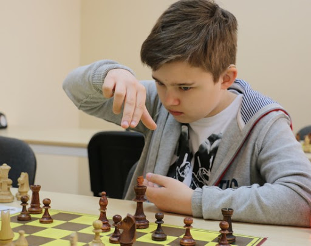

SZACHY
O AUTORZE
Nazywam się Paweł Piekielny. Mam 17 lat. Jestem zawodowym szachistą. Posiadam tytuł kandydata na mistrza oraz 2104 FIDE. Gram w szachy od 2011 roku.
Chcesz się ze mną skontaktować?
Naciśnij przycisk:
OSIAGNIECIA SZACHOWE
- 11 miejsce w Półfinałach Mistrzostw Polski Juniorów C14 2017 i awans na Mistrzostwa Polski Juniorów C16 2018
- 4 miejsce w kategorii wiekowej do lat 15 na Mistrzostwach Polski Juniorów 2018 i awans na Mistrzostwa Polski Juniorów C18 2019
- 7 miejsce w ogólnej klasyfikacji na Mistrzostwach Polski Juniorów C16 2019 i 3 miejsce w kategorii wiekowej do lat 16 oraz awans na Mistrzostwa Polski Juniorów C18 2020
- Awans z III ligi do Drużynowych Mistrzostw Polski Juniorów - II liga - 2018
- Udział w II lidze Juniorów oraz zajęcie 37 miejsca drużynowo i utrzymanie w II lidze - 2019
- 4 miejsce w kategorii wiekowej do lat 17 na Mistrzostwach Polski Juniorów C18 2020 i awans na Mistrzostwa Polski Juniorów C18 2021
LICZBA MEDALI
| 1 miejsce | 2 miejsce | 3 miejsce |
| 20 | 10 | 30 |
GALERIA
|
|

|
|
|
Mistrzostwa Polski Juniorów C18 2020
|
Drużynowe Mistrzostwa Polski - II liga 2019
|